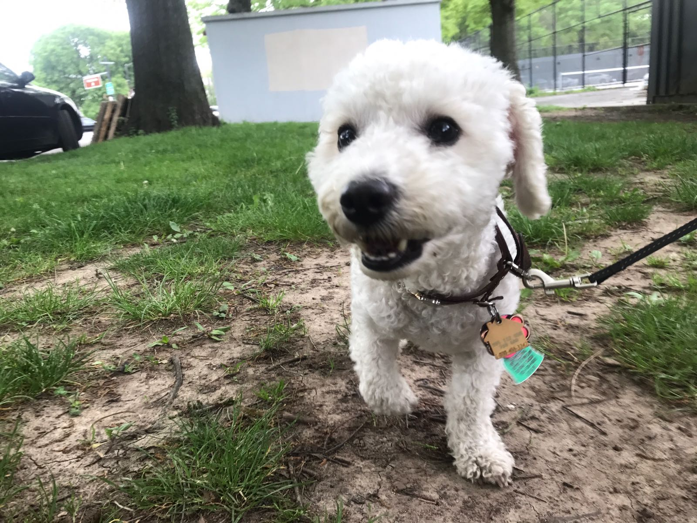

 Dr. Boo is a 6-year-old bichon frise. He would like you to know he is a very good boi. While he has the title of doctor, he does not hold a degree in anything. He specializes in napping. His favorite food is Cesear's dry dog food and would like to eat it all the time.
His best friend is Eloise aka Kitty aka Chunky Monkey. She's not always keen on playing, but when she is, they have a grand old time.